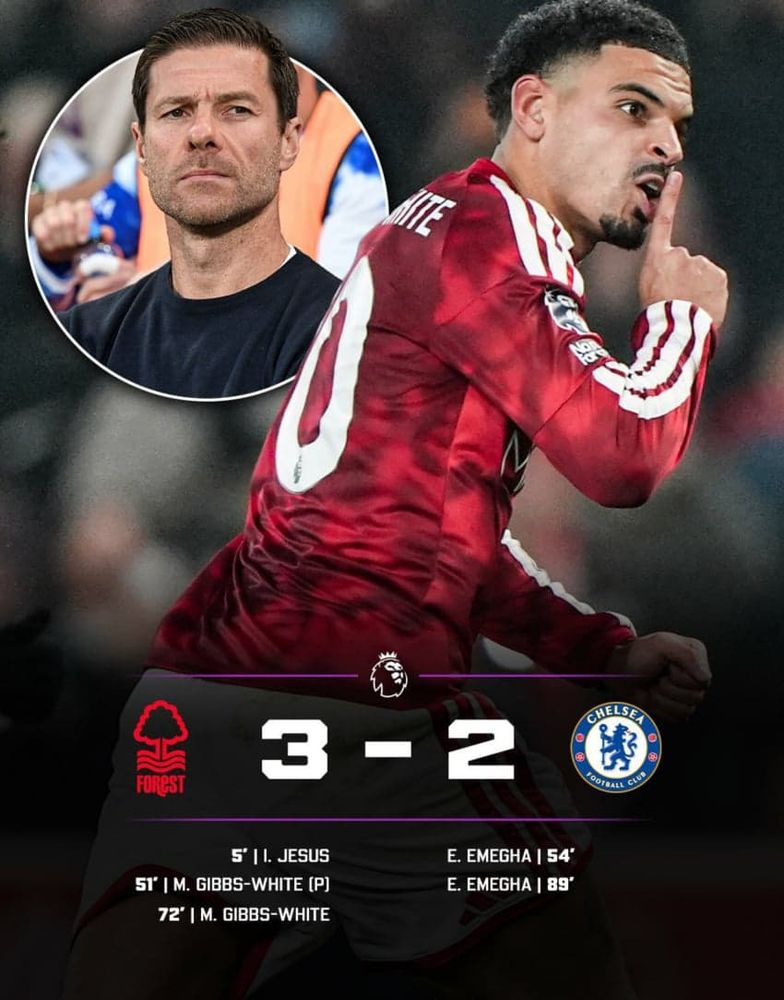
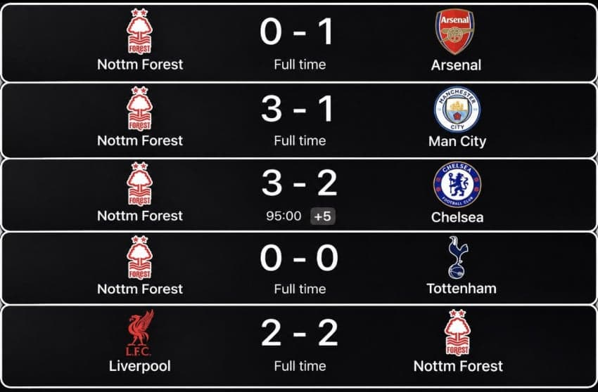

이고르 제주스 선제골 모건 깁스화이트 추가골 에마누엘 에메가 골 모건 깁스화이트 멀티골 에마누엘 에메가 멀티골 . - dc official App출처: 해외축구 갤러리 [원본 보기]
댓글
수집 당시 댓글 22개
ㅇㅇ · 11.28 07:02:36
도쿄도청 · 11.28 07:29:27
ㅇㅇ · 11.28 08:15:15
ㅇㅇ · 11.28 19:40:58
ㅇㅇ · 11.28 19:42:43
원갈이 · 11.28 19:42:55
ㅇㅇ · 11.28 19:44:49
· ㅇㅇ · 11.28 19:51:23
· ㅇㅇ · 11.28 19:53:19
· ㅇㅇ · 11.28 20:09:47
llllllIllllll · 11.28 19:44:57
ㅇㅇ · 11.28 19:48:35
히이잉 · 11.28 19:49:19
かなたん · 11.28 19:51:16
ㅇㅇ · 11.28 19:53:03
ㅇㅇ · 11.28 19:55:09
ㅇㅇ · 11.28 19:58:20
크리스티아노 · 11.28 20:00:34
ㅇㅇ · 11.28 20:03:15
ㅇㅇ · 11.28 20:12:28
히이잉 · 11.28 20:13:22
ㅇㅇ · 11.28 20:17:03